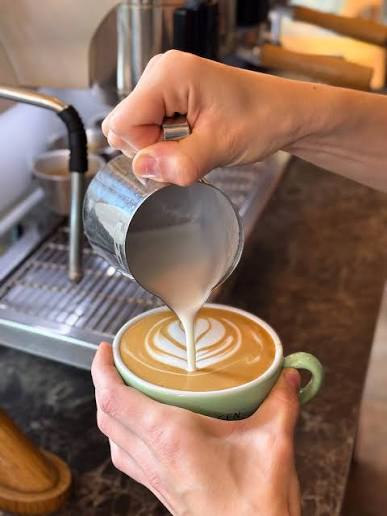

Et dobbelt shot med fylde, sødme og noter af mørk chokolade.
Din lille pause på Østerbro
God kaffe.
Gode stunder.
En kop, der varmer. Et sted, du har lyst til at blive. Hos Nico’s er der plads til både hverdagens små pauser og de lange samtaler.
Kaffe med omtanke.
Og altid plads til én mere.

KAFFE. NÆRVÆR. LIDT MERE RO.
Lille kaffebar. Stor hjertevarme.
Midt i byen.
Helt ned i gear.
Nico’s er en lille, uformel kaffebar på Østerbro med en stor kærlighed til god kaffe. Her mødes du af duften af friskmalede bønner, lune croissanter og et smil bag disken.
Tag din bog med, slå computeren op, eller kom forbi med en ven. Vi har rolige hjørner, fællesborde og tid til at gøre din kaffe, som du kan lide den.
Vi gemmer en plads til digFind din næste favoritkaffe
Er du i tvivl om, hvad du skal vælge? Start her:
- Espresso: Til dig, der ønsker en lille, intens kaffe uden mælk.
- Cappuccino: Til dig, der elsker varm kaffe med luftigt mælkeskum.
- Caffè latte: Til dig, der foretrækker en mildere kaffesmag og masser af varm mælk.
- Islatte: Til dig, der vil have en kold kaffe med mælk og is.
Det er de små ting
Mere end en god kop kaffe.
Omhu i hver kop
Vi vælger bønner med karakter og justerer kværnen hver morgen. Du skal kunne smage, at vi gør os umage.
Plads til din hverdag
Gratis wi-fi, stikkontakter og en rolig plads til din computer. Eller bare et blødt hjørne, hvor du kan være offline.
Et lokalt mødested
Her er du velkommen, uanset om du kender alle eller kommer for første gang. Kom, som du er. Bliv lidt længere.
Et lille kig indenfor
Her føles hverdagen lidt rarere.
Find din yndlingsplads.
Ord fra den anden side af disken
Det bedste ved Nico’s? Gæsterne.
Eksempler på gæsteanmeldelser til denne præsentationsside.
“Min yndlingsplads til en rolig formiddag med computeren. Kaffen er god, og der er altid en rar stemning.”
“Vi kom for en hurtig kop kaffe og blev i to timer. Den slags sted, man har lyst til at komme tilbage til.”
“En cappuccino og en lun kardemommesnurre ved vinduet. Så behøver en lørdag faktisk ikke mere.”
Vi sætter kaffen over
Din næste pause
er lige om hjørnet.
Kom forbi til en hurtig espresso på farten eller slå dig ned en hel eftermiddag. Vi glæder os til at se dig.
Find vej i Google Maps (åbner i en ny fane)Find os her
Nico’s KaffebarWillemoesgade 18
2100 København Ø
Åbningstider
- Mandag – fredag
- 07.30 – 18.00
- Lørdag
- 09.00 – 17.00
- Søndag
- 09.00 – 16.00
Adresse, åbningstider og kontaktoplysninger er eksempler og skal erstattes inden offentliggørelse.
Ofte stillede spørgsmål
Kan jeg få havredrik i min kaffe?
Ja, du kan vælge havredrik i din kaffe for 5 kr. ekstra.
Kan jeg sidde med min computer hos jer?
Ja, vi har gratis wi-fi og pladser med stikkontakter.
Hvornår har I åbent i weekenden?
Vi har åbent lørdag kl. 9–17 og søndag kl. 9–16.